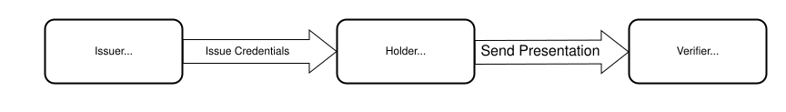
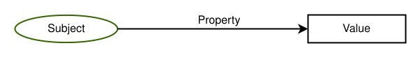
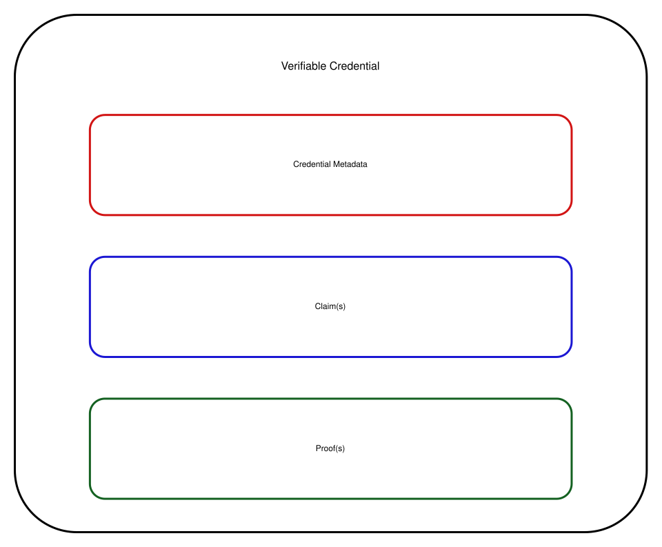
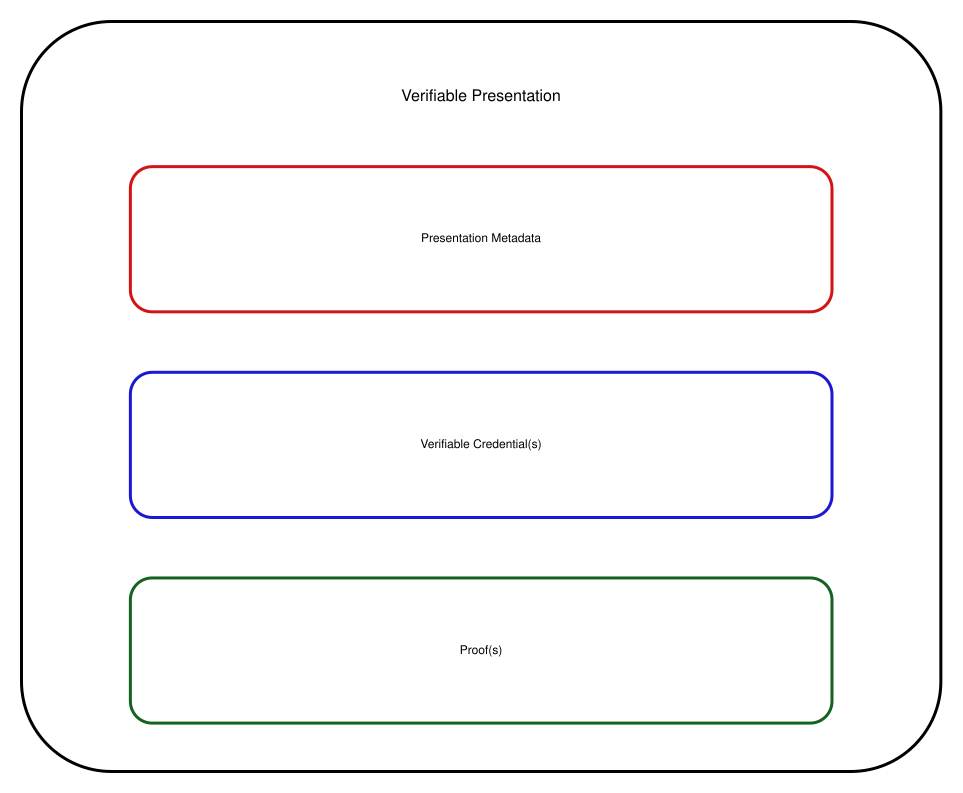
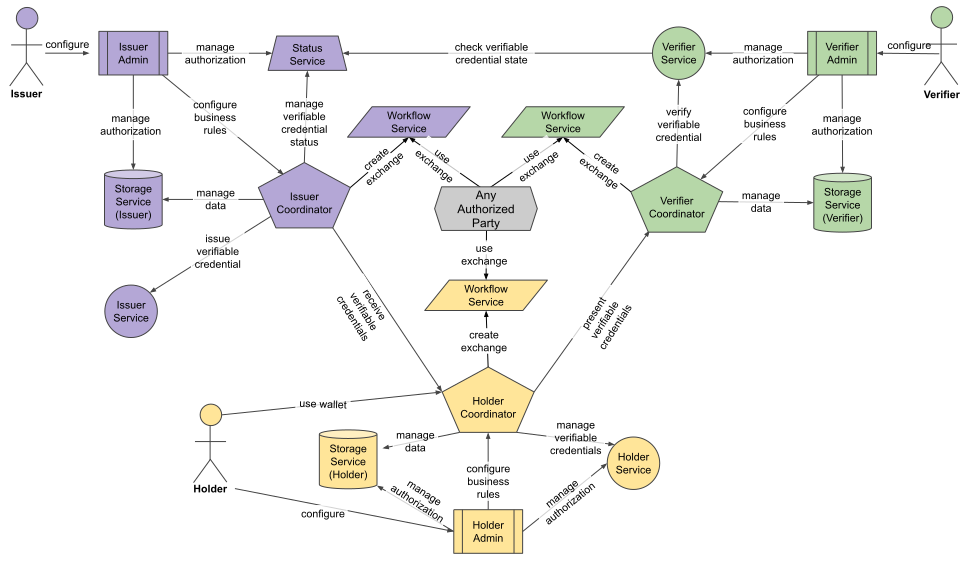

Credentials are a part of our daily lives; driver’s licenses are used to assert that we are capable of operating a motor
vehicle, university degrees can be used to assert our level of education, government-issued passports enable us to
travel between countries, and trade authorities issue certificates containing various informations on a product.
The family of W3C Recommendations for Verifiable Credentials, described in this overview document,
provides a mechanism to express these sorts of credentials on the Web in a way that is cryptographically secure, privacy
respecting, and machine-verifiable.
Status of This Document
This section describes the status of this
document at the time of its publication. A list of current W3C
publications and the latest revision of this technical report can be found
in the
W3C standards and drafts index.
Group Note Drafts are not endorsed by
W3C nor its Members.
This is a draft document and may be updated, replaced, or obsoleted by other
documents at any time. It is inappropriate to cite this document as other
than a work in progress.
The
W3C Patent
Policy
does not carry any licensing requirements or commitments on this
document.
This document provides a non-normative, high-level overview for W3C’s Verifiable Credential specifications and serves as
a roadmap for the documents that define, describe, and secure these credentials. It is not the goal of this document to be
very precise, nor does this overview cover all the details. The intention is to provide users, implementers, or anyone
interested in the subject, a general understanding of the concepts and how the various specifications, published by the
Verifiable Credentials Working Group, fit together.
2. Ecosystem Overview
The Verifiable Credential specifications rely on an ecosystem consisting of entities playing different “roles”. The main
roles are:
An entity that creates a Verifiable Credential, consisting of a series of statements related to its subject. An
example is a university administration that issues credentials for university degrees or certificates for alumni.
An entity that possesses one or more Credentials, and that can transmit presentations of those
Verifiable Credentials to third parties. An example may be the person who “holds” his/her own educational degrees.
Another example may be a digital wallet that contains several Credentials on someone’s behalf.
An entity that performs verification on a Verifiable Credential to check the validity, consistency, etc., of a
Credential. An example may be an employer’s digital system that checks the validity of a university degree before
deciding on the employment of a person.
For a more precise definition of these roles, as well as other roles, see the relevant
section in the data model specification.

Figure 1The roles and information flows forming the basis for the VC Data Model.
3. High Level View of the Specifications
Figure 2 provides an overview of the main building blocks for Verifiable Credentials, including their
(normative) dependencies. For more details, see the subsequent sections in this document.
Figure 2
Verifiable Credentials Working Group Recommendations (the figure is also
available in SVG).
The Verifiable Credentials Data Model v2.0 [vc-data-model] specification, which defines the core concepts that all other specifications
depend on, plays a central role. The model is defined in abstract terms, and applications express their specific credentials
using a serialization of the data model. The current specifications use a JSON serialization; the community may develop
other serializations in the future.
When Verifiable Credentials are serialized in JSON, it is important to trust that the structure of a Credential may be
interpreted in a consistent manner by all participants in the verifiable credential ecosystem. The
Verifiable Credentials JSON Schema Specification [vc-json-schema] defines how [json-schema] can be used for that purpose.
The Confidence Method v1.0 [vc-confidence-method] specification defines an extensible mechanism that issuers can use;
the goal is to increase the confidence of verifiers in the legitimacy of the presentation of a given credential.
The Verifiable Credential Rendering Methods v1.0 [vc-render-method] specification also defines an extensible mechanism for issuers; the goal
is to provide preferred mechanisms for the presentation of a credential. These presentations may use images, simple
cards in a digital wallet, complex visual presentations, or HTML, CSS, and JavaScript in a secure execution environment.
Credentials can be secured using two different mechanisms: enveloping proofs or embedded proofs. In both cases, a
Credential is cryptographically secured by a proof (usually digital signatures). In the enveloping case, the
proof wraps around the Credential, whereas embedded proofs are included in the serialization alongside the Credential
itself.
The Bitstring Status List v1.0 [vc-bitstring-status-list] specification defines a privacy-preserving, space-efficient,
and high-performance mechanism for publishing the status of a specific Verifiable Credential, such as its suspension or
revocation, through the use of bitstrings.
The Verifiable Credential Forgery Defense v1.0 [vc-forgery-defense] specification defines a mechanism for issuers of Verifiable Credentials
to publish indexed lists of compact cryptographic witnesses. This is an extra layer of security for Credentials that are
already issued, but whose signature keys may potentially be compromised, e.g., through future advances in quantum computing.
The Verifiable Credential ecosystem relies on the ability of verifiers to determine whether a particular issuer is recognized
to perform a particular action. The Recognized Entities v1.0 [vc-recognized-entities] specification defines an
interoperable mechanism to express and communicate the recognition of entities that perform known actions like issuing
or verifying specific types of credential. For example, that an issuer is recognized to assess conformance to a specific
standard, that an organization is authorized to issue a specific type of federated identifier, or that a university is
recognized as being able to issue under graduate degrees.
The VCALM v1.0 [vcalm] specification defines HTTP APIs among the active entities corresponding to the main “roles” in the
Verifiable Credential model (i.e., issuer, holder, and verifier, see also 2. Ecosystem Overview). The specification
provides a reference model for components within these roles, with the corresponding APIs among those
components.
Note
In 2025, a number of documents were published as W3C Recommendations, which is the W3C terminology for Web Standards.
Although also published at that time, two documents, namely the Verifiable Credentials JSON Schema Specification and the Data Integrity BBS Cryptosuites v1.0
specifications, were not published as Recommendation at the time. Though technically complete, they are still Candidate
Recommendations. The reasons are different. The former has not yet been implemented by at least two mutually independent
implementations (which is the requirement to be published as a standard) whereas the latter has to wait until the
underlying cryptographic technique (i.e., The BBS Signature Scheme) is finalized by the IETF. It is expected that these
two documents will be published as Web Standards eventually.
A revision cycle for some of these specifications has started in 2026. Some documents have been re-issued as Working
Drafts (marked with a higher minor version number). But, more importantly and a number of new specifications have been
added to the family of documents, to be published, eventually, as Recommendations as well.
The official publication list of the Working Group shows the
exact status of all the documents.
4. The Verifiable Credentials Data Model
4.1 Claims, Properties
A core concept is “claims”: statements made about various entities, referred to as “subjects”. Subjects may be a person
(e.g., the person holding a university degree), an animal, an abstract concept, another Credential, etc. Claims may also
be on the enclosing Credential itself, such as issuance date, validity periods, etc. (Such claims are also loosely
referred to as “credential metadata”.)
Claims are expressed using “properties” referring to “values”. Values may be literals, but may also be other entities
referred to, usually, by a [URL]. In that case, that entity may become the subject of another claim; these claims,
together, form a graph of claims that represents a Credential. (See Figure 6 for an
example of such a graph represented graphically. For more complex examples, refer to the Verifiable Credentials Data Model v2.0
specification itself.)

Figure 3The basic structure of a claim with (in this case) a literal value.
The Verifiable Credentials Data Model v2.0 document specifies a number of standard properties. These include, for example,
credentialSubject, type, issuer, or validFrom. Developers may define their own properties to express specific
types of Credentials, like a driving license, a university degree, a marriage certificate, or a Digital Product
Passport.
4.2 Core Concepts
4.2.1 Credentials
A Credential is a set of one or more claims made by the same entity.
Credentials might also include an identifier and metadata to describe properties of the Credential, such as a
reference to the issuer, the validity date, a representative image, the revocation mechanism, and so on. A
Verifiable Credential is a set of claims and metadata (i.e., a Credential) that also includes verification
mechanisms that cryptographically prove who issued it, ensures that the data has not been tampered with, etc.
For a more detailed description of abstract Verifiable Credentials, with examples, see the relevant
section in the data model specification.

Figure 4Basic components of a Verifiable Credential.
4.2.2 Presentations
Enhancing privacy is a key design feature of Verifiable Credentials. Therefore, it is important for entities using
this technology to be able to express only the portions of their persona that are appropriate for a given
situation. The expression of a subset of one's persona is called a Verifiable Presentation. Examples of
different personas include a person's professional persona, their online gaming persona, their family persona, or an
incognito persona.
A Verifiable Presentation is created by a holder, can express data stemming from multiple Verifiable Credentials,
and can contain additional metadata in forms of additional claims. They are used to present claims to a verifier. It
is also possible to present Verifiable Credential directly.
A Verifiable Presentation is usually short-lived, it is not meant to be stored for a longer period.
For a more detailed description of abstract Verifiable Presentations, with examples, see the relevant
section in the data model specification.

Figure 5Basic components of a verifiable presentation.
4.3 JSON Serialization
In the [vc-data-model] specification, as well as in the other documents, Verifiable Credentials and Presentations are
mostly expressed in JSON [rfc7519], more specifically JSON-LD 1.1 [json-ld11]. In this serialization, properties
of claims are represented as JSON names, and values as JSON literals or objects. Subjects of claims are either
explicitly identified by an id property, or implicitly by appearing as an object of another claim. JSON-LD is useful
because it enables the expression of the graph-based data model on which verifiable credentials are based, it has a
machine-readable semantics, and is also useful when extending the data model. (See the relevant section in the [vc-data-model] specification.)
Standard properties defined by the [vc-data-model] form a distinct set of JSON names, referred to as a (standard)
vocabulary. An important characteristic of Verifiable Credentials in JSON-LD is that it favors a decentralized
and permissionless approach to extend to a new application area through application-specific vocabularies, distributed on the Web. Anyone can “publish” such a vocabulary, following some rules described in
the extensibility section of the specification.
The following JSON-LD code is an example for a simple Credential. It states that the person named “Pat”, identified by
https://www.example.org/persons/pat, is an alumni of the Example University (identified by
did:example:c276e12ec21ebfeb1f712ebc6f1). The Credential is valid from the 1st of January 2010, and is
issued by an entity identified by did:example:university.example:CSSchool. Most of the properties in the
Credential are from the standard Verifiable Credentials vocabulary (identified by
https://www.w3.org/ns/credentials/v2), but some terms (like alumniOf or AlumniCredential) are added by
the application-specific vocabulary referred to by https://www.w3.org/ns/credentials/examples/v2.
Figure 6
The Credential in Example 1 represented as a collection of claims.
Note
The Alumni Credential in Example 1 is used as a starting point throughout this document to
show how to apply ßadditional features defined by the various specifications.
The Credential in Example 1, issued by Example University, is stored by a holder (who may be a
person, a digital wallet, or any other entity). On request, the holder may “present” the Credential to a verifier,
encapsulated in a Presentation. This is how the Credential looks like in the JSON-LD serialization:
Note that the holder could have presented several Credentials within the same presentation, or create a new Credential
by either combining it with others or removing some claims as irrelevant for the specific context.
4.4 Extensions
This section describes additional (and optional) features that an issuer may choose to use to extend the core
Credential.
4.4.1 Confidence Methods
The Confidence Method v1.0 [vc-confidence-method] specification defines a mechanism that issuers can use to
increase the confidence of verifiers in the legitimacy of the presentation of a given credential. An analogy is
checking a driving license: when the police officer (the “verifier”) gets hold of the license, they would first
compare the photograph on the physical license to compare it with the face of the driver. This raises the confidence
of the police officer that the driver is indeed the “subject” of the license (the “credential”).
The specification adds the concept of a Confidence Method
to the core model. It defines mechanisms that can be used by the verifier to increase its confidence that a subject of
the VC is also the subject of another interaction. For example, the issuer might provide a public key of the subject;
the verifier could use a proof-of-use protocol to establish that the current user indeed holds the corresponding secret
key by signing cryptographic challenges (see Example 3). A more complex verification
method might be based on biometrics, like embedding raw biometric data (photograph, audio recordings, fingerprint data),
or biometric vectors, i.e., compact mathematical representations produced by a specific model that can be used
for matching. Some of these methods are defined in the specification, but specific communities may extend the model with
other, proprietary approaches.
Note
The list of methods in the specification is still to be finalized.
Example 3: The Alumni Credential extended by a confidence method, relying on a public EdDSA key of the subject.
The issuer of a credential may have preferred ways to express a verifiable credential to an observer. For example, an
issuer of the university alumni badge might want to include rich imagery of their university logo and specific placement
of the alumni information in specific areas of the badge. The Verifiable Credential Rendering Methods v1.0 [vc-render-method] specification
defines an extensible mechanism that issuers may use to provide these preferred mechanisms for the presentation of a
credential. These presentations may use images, simple cards for a digital wallet, complex visual presentations, or HTML, CSS, and JavaScript in a secure execution environment.
The specification adds the
renderMethod property to the data model
for the issuer to use. The value of that property is an object, whose claims provide the necessary parameters for a
specific render method. The document also includes some specific categories of render methods that can be used.
These include:
“Static”: the issuer provides a static resource in the credential that should be directly consumed/displayed
by the holder.
“Data”: the holder transforms credential to key/value data entries and displays it. The transformation’s parameters
include the possibility to restrict the credential's statements to be displayed.
“HTML”: a generic, HTML+JavaScript render suite, that performs the final rendering of the credential via a sandboxed
HTML iframe. The HTML snippet is provided by the issuer. This approach is well adapted to Web browsers, but also
to mobile applications using WebView, and makes use of the
rich possibilities offered by Web APIs.
Communities may define their own render methods.
Note
Example 4 adds an HTML-based render method to our alumni example. Note the usage of the
digestMultibase property which adds an extra security to the choice of the HTML snippet. The snippet
itself can be retrieved using the university’s dedicated URL.
Example 4: The Alumni Credential, to be preferably rendered with an HTML based render method.
A significant part of the integrity of a Verifiable Credential comes from the ability to structure its contents so
that all three parties — issuer, holder, verifier — may have a consistent mechanism of trust in interpreting the
data that they are provided with. One way of doing that is to use [json-schema] to check the structural validity
of the Credential. The Verifiable Credentials JSON Schema Specification [vc-json-schema] specification adds standard properties to express the
association of a Credential with a JSON Schema.
Consider the following example:
Example 5: The Alumni Credential with a reference to a JSON schema
Using this JSON Schema, a verifier can check whether the Credential is structurally valid or not.
For security reasons one may want to go a step further: check/verify the JSON Schema itself to see if, for example,
it has been tampered with. This can be done by referring to the JSON Schema
indirectly through a separate Verifiable Credential. The reference to such a Verifiable Credential looks
very much like Example 5 except for the value of the type:
Example 7: A Alumni Credential with a JSON schema credential
In this case, when dereferenced, the URL https://university.example/Credential-schema-credential should return a
Verifiable Credential, whose credentialSubject property refers to the required JSON Schema (i.e.,
https://university.example/Credential-schema.json). See the
example
in the Verifiable Credentials JSON Schema Specification specification for an example and for further details.
4.5 Example: the Alumni Credential
For reference, Example 8 represents the full Alumni Credential, as constructed so far.
Example 8: A simple alumni credential with a JSON schema
Enveloping proofs of Credentials, defined by this Working Group, are based on JSON Object Signing and Encryption (JOSE), CBOR Object Signing and Encryption (COSE) [rfc9052], or Selective Disclosure for JWTs [rfc9901]. These are all
IETF specifications, or groups of specifications (like JOSE, that refers to JWT [rfc7519], JWS [rfc7515], or
JWK [rfc7517]). The Securing Verifiable Credentials using JOSE and COSE [vc-jose-cose] Recommendation defines a “bridge” between these and the
Verifiable Credentials Data Model v2.0, specifying the suitable header claims, media types, etc.
In the case of JOSE, the Credential is the “payload” (to use the IETF terminology). This is preceded by a suitable
header whose details are specified by the relevant section of the
[vc-jose-cose] specification. These are encoded, concatenated, and signed, to be transferred in a compact form by one
entity to another (e.g., sent by the holder to the verifier). All the intricate details on signatures, encryption keys,
etc., are defined by the IETF specifications; see Example 9 for a specific case.
The usage of COSE [rfc9052] is similar to JOSE, except that all structures are represented in CBOR [rfc8949]. From
the Credentials point of view, however, the structure is similar insofar as the Credential (or the Presentation) is
again the payload for COSE. The use of CBOR means that the final representation of the Verifiable Credential (or
Presentation) can have a reduced footprint which can be, for example, shown in a QR Code.
The [rfc9901] specification is a variant of JOSE, which allows for the selective disclosure of individual claims.
Claims can be selectively hidden or revealed to the verifier, but all claims are cryptographically protected against
modification. This approach is obviously more complicated than the JOSE case but, from the Credentials point of view,
the structure is again similar. The original Credential is the payload for SD-JWT; and it is the holder’s responsibility
to use SD-JWT when presenting the Credential to a verifier using selective disclosure.
Issue 1
5.1.1 Example: the Alumni Credential Secured with JOSE and COSE
Example 9 shows the Credential example shown in Example 1, enriched
with a reference to a JSON Schema in Example 5. It is secured by two different enveloping
proofs, namely JOSE and COSE.
The operation of Data Integrity is conceptually simple. To create a cryptographic proof, the following steps are
performed: 1) Transformation, 2) Hashing, and 3) Proof Generation.
Transformation is a process described by a transformation algorithm that takes input data and
prepares it for the hashing process. In the case of data serialized in JSON this transformation includes the
removal of all the artifacts that do not influence the semantics of the data, such as spaces, new lines, the
order of JSON names, etc. (a step usually referred to as canonicalization). In some cases the
transformation may be more involved.
Hashing is a process described by a hashing algorithm that calculates an numerical identifier for the
transformed data using a cryptographic hash
function. Typically, the size of the resulting hash is smaller than the data, and it is suitable
for complex cryptographic functions like digital signatures.
Proof Generation is a process described by a proof method that calculates a value that
protects the integrity of the input data from modification or otherwise proves a certain desired threshold of
trust. A typical example is the application of a cryptographic signature using asymmetric keys, generating the
signature of the data using a private key.
Verification of a proof involves repeating the same transformation and hashing steps on the verifier's side
and, depending on the proof method, validating the newly calculated hash value with the proof associated with the
data. In the case of a digital signature, this means verifying, using the cryptographic algorithms associated with
the asymmetric keys, that the proof value indeed signs the newly calculated hash.
5.2.2 Data Integrity of Credentials
The Verifiable Credential Data Integrity 1.0 [vc-data-integrity] specification starts with the general structure and defines a set
of standard properties describing the details of the proof generation process. The specific details (i.e., the
transformation, hash, and/or proof method algorithms) are defined by separate
Cryptographic Suites (or cryptosuites, for short). The
Working Group has defined a number of such cryptosuites, see 5.2.3 Cryptosuites below.
The core property, in the general structure, is called proof. This
property embeds a claim in the Credential, referring to a separate collection of claims (referred to as a
Proof Graph) detailing all the claims about the proof itself:
Example 10: Skeleton of an embedded proof added to a credential.
Note the proofValue property, whose object is the result of the proof generation process. (The proof value is for
illustrative purposes only, and does not reflect the result of real cryptographic calculations.)
The definition of proof introduces a number of additional properties.
Some of these are metadata properties on the proof itself, like created, expires, or domain. Others provide
the necessary details on the proof generation process itself, like cryptosuite, nonce (if needed), or
verificationMethod that usually refers to cryptographic keys. The exact format of the public keys, when used for
Credentials, is defined in the [cid-1.0] specification, and is based on either the JWK [rfc7517] format or a
Multibase encoding of the keys, called
Multikey. Details of the key values are defined by other communities (IETF,
cryptography groups, etc.) and are dependent on the specific cryptographic functions they operate with.
It is possible to embed several proofs for the same Credential. These may be a set of independent proofs (based, for
example, on different cryptosuites, to accommodate to the specificities of different verifiers), but may also be a
chain of proofs that must be evaluated in a given order.
A proof may also specify its purpose via the proofPurpose property: different proofs may be provided for
authentication, for assertion, or for key agreement protocols. These details are also defined in the [cid-1.0]
specification. The verifier is supposed to choose the right proof depending on the purpose of its own operations,
which is yet another possible reason why the holder or the issuer may provide several proofs for the same
Credential.
Table 1 provides an overall view of the cryptosuites defined by the Recommendations. They
all implement the general pipeline of proof generation as described in
section 4.2.1. One axis of differentiation is the data transformation
function, i.e., the canonicalization of the JSON-LD serialization: cryptosuites whose name include the term
rdfc use the RDF Dataset Canonicalization (RDFC-1.0) [rdf-canon], while the term
jcs refers to the usage of the JSON Canonicalization (JCS) [rfc8785] instead. The other axis is
whether the cryptosuite provides selective disclosure, which is the case for BBS and all other suites whose name
include the term sd (all selective disclosure schemes use RDFC). The third axis is whether the
cryptographic signature algorithm is quantum resistant or not. Finally, the ecdsa-xi-2023 suite is a
variant of ecdsa-rdfc-2019, which allows the inclusion of additional, external data to be “added” to
the canonicalized JSON data before signature.
A common characteristic of all these cryptosuites is that keys must always be encoded using the
Multikey encoding. For the ECDSA case the keys may also carry the choice of the
hash function to be used by the proof generation algorithm. This provides yet another differentiation axis among
cryptosuites.
Note
Applications may define their own cryptosuites by applying different transformation and/or cryptographic signature
schemes in similar patterns. For example, it would be possible to define a cryptosuite using the SM2
algorithm [rfc9563] similarly to EdDSA.
5.2.3.1 Full Disclosure Schemes
The full disclosue cryptosuites (i.e., the ones whose name contain the rdfc or
jcs terms) follow a simple version of the proof generation pipeline as described in §5.2.1 Creation of Proofs in Data Integrity: the Credential is canonicalized (using either JCS or RDFC-1.0) and the result is hashed (using the hash
functions as defined by the signature key). The calculation of the hash values depend on the canonicalization
method: in the JCS case the canonical JSON data is hashed directly, whereas in the RDFC-1.0 case the individual
canonicalized claims are first sorted and then concatenated before being hashed.
There is an extra twist before signing the hash values: the same pipeline is also used on a set of
claims called proof options, i.e., all the claims of the proof graph exceptproofValue. This
set of claims is also canonicalized and hashed, following the same process as for the Credential itself,
yielding a second hash value. It is the concatenation of these two values that is signed by EdDSA,
ECDSA, or one of the quantum resistant schemes, respectively, producing the value for the proofValue property.
By doing so, the various proof metadata, as well as the public key reference itself, are also signed and become
verifiable.
5.2.3.2 Selective Disclosure Schemes
The bbs-2023 cryptosuite, and the ones marked with sd in their names, provide selective
disclosures of individual claims. The fundamental idea of selective disclosure is that the Verifiable Credential
is converted into a flat list of individual claims by the holder; the mandatory claims are hashed and signed
together, and the selectively disclosable ones are signed separately before forwarding the information to the
verifier.
In all cases, the process separates the base proof (calculated by the issuer for the holder), and the
derived proof (which is typically calculated by the holder when selectively presenting credential
claims to the verifier).
To calculate the base proof, the Credential is supplemented with extra information that separates the
mandatory and non-mandatory claims. Using that information, the issuer’s transformation step
in §5.2.1 Creation of Proofs in Data Integrity produces a data structure containing the hash of the proof options
(much like in the case of the full disclosure schemes) and of the set of mandatory claims, plus the
identification of mandatory claims. Some elements of this data structure are then signed, the resulting
structure is converted into CBOR, and encoded to provide a multibase-encoded proofValue.
The derived proof is generated by the holder upon a request which contains JSON pointers [rfc6901] identifying
the claims to be disclosed. To answer the request the information in the proofValue is used to create a
reveal document, i.e., a new Credential containing the mandatory claims and the requested non-mandatory
claims. Finally, the holder generates a derived proof for this reveal document, which is sent to the verifier.
The verifier should be able to test the proof of the reveal document without having access to the original data
and its (base) proof. Each non-mandatory claim is signed separately by the issuer using a common, ephemeral
secret key, whose public counterpart is part of the both the base and derived proof values. That can be used to
check the disclosed non-mandatory claims. The bbs-2023 cryptosuite relies on the cryptographic properties of
the BBS scheme itself, which support the creation of proofs for the verification of selectively disclosed data.
This is based on the mathematical nature of the BBS scheme: the BBS signature of all the claims
(generated by the issuer and part of the base proof) can be reused by the holder to generate a
BBS Proof of the subset of the claims (which is part of the derived proof). The BBS specific
verification step ensures the required trust.
Note
Issue 2
5.2.3.3 Quantum Resistance
Publication of quantum-resistant cryptosuites is especially timely, in view of some
recent research results on quantum vulnerabilities. That study led experts to consider that there exists a small but meaningful probability that elliptic curve
keys could be broken by the early 2030s. As a result, organizations have already started to convert their
authentication services to use, eventually, quantum resistant cryptographic algorithms, with deadlines as early
as 2029.
For Verifiable Credentials this means that ECDSA or EdDSA based signatures may become vulnerable. The collection
of quantum resistant cryptosuites provide alternative digital signature schemes, using the best stable
algorithms known today.
Note
5.2.4 Example: the Alumni Credential Secured with EdDSA and ECDSA
Example 11 shows the Alumni Credential example, shown in
Example 1 and enriched with reference to JSON Schema, and Rendering/Confidence Methods. It is
secured by two different embedded proofs, using the ecdsa-rdfc-2019 and eddsa-rdfc-2022 cryptosuites
respectively.
Example 11: Embedded EdDSA and ECDSA proofs added to the Alumni Credential
Note however that the value of the verificationMethod property may have been the public key itself, instead of a
reference to a separate resource containing the key.
6. Verifiable Credential Deployment
6.1 Barcodes
Verifiable Credentials can be expressed through different media, such as simple text, a PDF file, or an image. An important
presentation format is the usage optical barcodes, like QR codes, that often appear on identity cards or driving
licenses. A simple approach is to convert the JSON serialization of the Credential into CBOR [rfc8949], and then
generate a QR Codes from that CBOR representation. This can be done by a number of off-the-shelf tools.
However,this approach has a major drawback for even moderately sized Verifiable Credentials: the result of the direct CBOR
conversion may create a QR Code that is too large for the available space, which has a severe size limitation. To solve
this problem, the Verifiable Credential Barcodes v1.0 [vc-barcodes] specification takes a slightly different approach. Instead of using
a generic CBOR conversion, it relies on the CBOR-LD [cbor-ld] representation of the credential. CBOR-LD is a CBOR
encoding tailored for JSON-LD: it includes the possibility for a semantic compression of the data, targeted at a
particular application vocabulary. It is possible to achieve compression ratios in excess of 60% better than general
compression schemes, which makes it possible to represent Verifiable Credentials for, say, driving licenses, birth
certificate,s and conformity certificates.
Figure 8
A birth certificate with the textual and QR Code representation of the same Credential; the QR Code also includes the
Credential proof.
Any credential can be represented in a barcode yielding, for example, a birth cerfiticate like on
Figure 8. However, in practical applications, the situation may be a bit more complex. Consider the
back side of a fictious employment authorization card on Figure 9:
Figure 9
The back of an employment authorization document that also includes a machine-readable zone (MRZ).
The card includes a machine-readable zone (MRZ) containing information designed to be read through optical character
recognition. The goal is to generate a Verifiable Credential securing that MRZ data; this requires a special Credential
whose subject cannot be simply expressed in JSON:
Example 13: Verifiable Credential for the MRZ data
The MachineReadableZone type means to take the data directly from the MRZ, without change.
Note the usage of the ecdsa-xi-2023 cryptosuite (listed in Table 1): it allows the addition
of additional, external data to the canonicalized JSON-LD data before signature. This is how the proof for the MRZ data
is combined with that of the full Credential. The result is a QR Code appearing on the front of the employment card on
Figure 10:
Figure 10
The front of an employment authorization document that also includes a Verifiable Credential in the form of a QR
code.
Issue 3
6.2 Bitstring Status List
It is often useful for an issuer of Verifiable Credentials to link to a location where a verifier can check whether a
credential has been suspended or revoked. This additional resource is referred to as a “status list”.
The simplest approach for a status list, where there is a one-to-one mapping between a Verifiable Credential and a URL
where the status is published, raises privacy as well as performance issues. In order to meet privacy expectations, it
is useful to bundle the status of large sets of credentials into a single list to help with group privacy. However,
doing so can place an impossible burden on both the server and client if the status information is as much as a few
hundred bytes in size per credential across a population of hundreds of millions of holders. The
Bitstring Status List v1.0 [vc-bitstring-status-list] specification defines a highly compressible, highly
space-efficient bitstring-based status list mechanism.
Conceptually, a bitstring status list is a sequence of bits. When a single bit specifies a status, such as “revoked” or
“suspended”, then that status is expected to be true when the bit is set and false when unset. One of the benefits of
using a bitstring is that it is a highly compressible data format since, in the average case, large numbers of
credentials will remain unrevoked. If compressed using run-length compression techniques such as GZIP [rfc1952] the
result is a significantly smaller set of data: for a status list of size is 131,072 entries, equivalent to 16 KB of
single bit values, GZIP compresses the bitstring down to a few hundred bytes when only a handful of verifiable
credentials are revoked.
Figure 11A visual depiction of the concepts outlined in this section.
The specification introduces the credentialStatus property, as well as some additional sub-properties, that should be
used to add this additional information to a Verifiable Credential.
Example 14 shows the example from Example 11, combined with
the information on the credential status: the purpose of that status information, the reference to the bitstring, and
the index into this bitstring for the enclosing credential:
Example 14: The Alumni Credential with a reference to a status list
The statusListCredential property, when dereferenced, should return a separate Credential for the status
list. The status list itself is the subject of that Credential (which, of course, can also be signed). An example is:
Example 15: A credential for a bitstring status list
The core property in this case is encodedList, which is a base64url encoded version of the GZIP compressed
bitstring status list.
6.3 Forgery Defense
The publication of the Verifiable Credential Forgery Defense v1.0 [vc-forgery-defense] is complementary to
quantum-resistant cryptosuites, and is motivated by the same threat. While cryptosuites let issuers
secure new proofs with post-quantum signatures, this specification lets an issuer establish post-quantum-backed
authenticity for credentials that are signed with conventional quantum-vulnerable algorithms. That may be the case for
credentials that cannot reasonably be re-issued or where the significant size of some quantum-resistant signatures
becomes an obstacle. (A good example may be the employment authorizations issued by a state or a country, as described in
6.1 Barcodes.)
The forgery defense mechanism defined by this specification is achieved by publishing a witness list that is
itself the subject of a separate Verifiable Credential. A “witness” in that list is, essentially, the most significant
bits of a hash value generated from the credential itself, combined with a random seed. The list combines a large number
of such witnesses in one, encoded value, and the Credential is signed by, preferably, a quantum resistant scheme:
Example 16: A witness list Credential signed using a quantum-resistant scheme
For older credentials, the verifier may locate the witness list in some out-of-band manner; e.g., a university may
publish the location for the witnesses of all the credentials it has issued. New Verifiable Credentials may include
information about the relevant witness, added to the credential status alongside
status lists references:
Example 17: The Alumni Credential with a reference to a forgery witness list
The verifiable credential ecosystem relies on the ability of verifiers to determine whether a particular issuer is
recognized to issue a certain type of verifiable credential. Similarly, holders should have the ability to decide
whether a particular verifier is recognized to verify a credential. Historically, these determinations have often been
made through out-of-band processes, bilateral agreements, or proprietary registries that are difficult to discover,
query, or reason about in an automated way. As verifiable credentials are increasingly deployed, the need for a
standardized, interoperable mechanism to express and communicate recognition of entities that perform known actions
becomes critical. This is the problem area addressed by the Recognized Entities v1.0 [vc-recognized-entities] specification.
Rather than mandating a central registry for issuers, this specification choses a decentralized approach. Any entity — a
local governmental body, a standard institution, a university office, or a local community — can issue a special
Verifiable Credential that lists all potential issuers that it “recognizes” to act either as an issuer or a verifier
(e.g., all schools of the university). The design may lead to a “Web of Recognition”: the same entity can be recognized
as an issuer both by the university office as well as the local governmental body, or the university office itself might
be recognized by another institution, like the local Ministry of Higher Education. The specification also supports
interoperability with existing trust infrastructure, such as X.509 [rfc5280] certificate authority lists and ETSI
Trust Service Lists [etsi-trust].
Example 18 shows the skeleton of a Verifiable Credential, issued by the
administration of Example University, which attests that the administrations of the School of Computer Science,
respectively of Philosophy, can issue credentials. (Note that the Alumni Credential in our example was
issued by the Schoold of Computer Science.)
We can also extend the Alumni Credential with the possibility for the verifier to trace back the Web of Recognition to a
possible “root”. In Example 19 the data about the issuer contains the recognizedIn
claim, the refers back to the credential in Example 18.
Example 19: Example for marking the issuer as being recognized on the Web of Recognition
It is interesting to note that the Recognized Entities v1.0 specification is also a perfect example for how easily
application areas may define bespoke Verifiable Credential types. It simply boils down to the syntactic and semantic
definition of new terms (e.g., RecognizedEntity or recognizedTo) to extend the core Verifiable Credential Data
Model. Once those are defined and documented in the form of a vocabulary for JSON-LD, including an application-dependent
context file, the terms can be used in a Verifiable Credential without further ado. Anyone can “publish” such a
vocabulary, following some rules described in the extensibility section
of the specification, no need for a central registration of the new terms.
6.5 An API for Lifecycle Management
The VCALM v1.0 [vcalm] specification provides a set of HTTP Application Programming Interfaces (HTTP APIs) and
protocols for issuing, verifying, presenting, and managing Verifiable Credentials. It defines APIs among the entities
corresponding to the main “roles” in the Verifiable Credential model (i.e., issuer, holder, and verifier, see also
2. Ecosystem Overview). The specification provides a reference model for components within these
roles, including the corresponding APIs among those components; see Figure 13 below for the
overall architecture.
Figure 12The roles forming the basis for the VC Data Model.

Figure 13
Reference model for the API Components. Arrows indicate initiation of flows.
The boundaries and interfaces among the components are defined to ensure interoperability and substitutability across
the Verifiable Credential conformant ecosystem. This approach helps to avoid vendor lock-in and leads to a pool of
independent implementations of interoperating components. Any given implementation of a specific role (i.e., issuer or
holder) may choose to aggregate any or all of the components of the model into a single functional application. The
individual components may be of a different nature (running on a browser or on a server, implemented in different
programming languages, etc.), each executing just part of the overall functionality.
A. Additional Publications
A.1 Working Group Notes
The VC Working Group has also published, and maintains, a few additional documents in the form of Working Group Notes.
Although these are not formal standards, they represent consensus among the Working Group Participants. These documents
are:
The use cases outlined in this document were, and are, instrumental in making progress toward standardization and
interoperation of both low– and high–stake claims, with the goals of storing, transmitting, and receiving digitally
verifiable proof of attributes such as qualifications and achievements. The use cases focus on concrete scenarios
that the technology defined by the group aims to address (including for future revisions).
This document provides implementation guidance for Verifiable Credentials.
Issue 4
Version 1.0 included a reference to
Verifiable Credential Extensions. Some of those entries have been
incorporated into the spec (e.g., Multi*) and the document does not seem to be actively maintained.
Actually, I wonder whether the list above is maintained at all. A more radical approach may be to remove this
section altogether…
A.2 Standard Vocabularies
As explained in the introductory sections, the specifications define a number of standard
vocabularies, i.e., standard sets of properties used as JSON names. These are used by
Verifiable Credentials to ensure interoperability. Although the formal specifications of these terms are provided by the
respective specifications, the vocabularies are also published as separate documents. This is done for an easier
reference and overview, and these documents are also important if Credentials are used by applications based on
RDF [rdf11-concepts]. These vocabulary documents are:
Example 20 shows the Alumni Credential example used throughout this document, with all
the constituents added. It is secured via different mechanisms defined for Verifiable Credentials. The issuer itself has
been recognized by the administration of the University (see Example 18), which is an
extra information for the verifier of this credential.
Example 20: A Verifiable Credential for alumni, with a reference to render and confidence methods, credential JSON schema, status and forgery lists.
![Diagram illustrating the structure of the Verifiable Credential (VC) specifications, using boxes labeled with references to the specification. Arrows on the diagram connect some of the boxes to represent (normative) dependencies. The box labeled as the VC Data Model is at the top-center of the diagram. Additional component boxes — such as Render Methods for specify preferred ways tp express a VC to the end user; VC Barcodes to express a VC in the form of a barcode; JSON Schema for structural checking; VC Recognized entities for secure the issuer are part of a specific ecosystem; VCALM for APIs for VC Lifecycle Management; Confidence Methods to specify ways to increase confidence for a verifier in a VC; Bitstring Status List for publishing status information; VC FOrgery Defense to publish an indexed list of compact fingerprints; and Controlled Identifiers for verification methods and relationships — are related to the VC Data Model. The box for securing mechanisms contain separate boxes for embedded proofs, on the left, and enveloping proofs, on the right. The box for embedded proofs contains a box labeled as Data Integrity, which depends both on the VC Data Model and on Controlled Identifiers, as well as boxes for the ECDSA, EdDSA, BBS, and Quantum Resistant Cryptosuites, supporting different elliptic curves and signature schemes; all of these depend on Data Integrity. The enveloping proofs box contains a single box labeled as 'JOSE and COSE ... using JWS, SD-JWT, or CBOR'; as with Data Integrity, this depends both on the VC Data Model and on Controlled Identifiers.](diagrams/VCWG_specifications.svg)
![Diagram showing an example of a Verifiable Credential. At top, there is an ellipse labeled 'https://university.example/Credential123 (Type: VerifiableCredential, ExampleAlumniCredential)'. This ellipse has two arrows going down. One arrow is nearer the right side of the ellipse, is labeled as 'validFrom', angles to the right, and terminates at a box labeled as '2010-01-01T00:00:00Z'. The second arrow is at the middle of the ellipse, is labeled as 'credentialSubject', and ends at an ellipse labeled as 'https://www.example.org/persons/pat'. This ellipse has two more arrows going down. One arrow is nearer the right side of the ellipse, is labeled as 'name', and angles to the right, terminating at a box labeled as 'Pat'. The second arrow is nearer the left side of the ellipse, labeled as 'alumniOf', and ends at another ellipse labeled as 'did:example:c276e12ec21ebfeb1f712ebc6f1'. This ellipse has a final arrow going down, which is labeled as 'name' and ends at a final box labeled as 'Example University'.](diagrams/credential_example.svg)


![This diagram shows a horizontal series of adjacent boxes: on the left, there are 14 boxes, and on the right, 3 boxes, with these two groups connected by four dot characters. The groups of boxes are annotated on the right by the text '16KB'. All boxes are filled with one color (green), except for those in the 5th and 10th positions, that are filled with a different color (red). These two red boxes are labeled as 'Revoked Credentials'. All of these elements are annotated, beneath, by the remark 'ZLIB Compression' and '135 bytes', with a small icon representing computer data.](diagrams/BitstringStatusListConcept.svg)